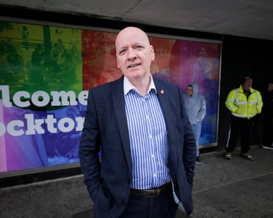
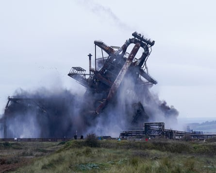
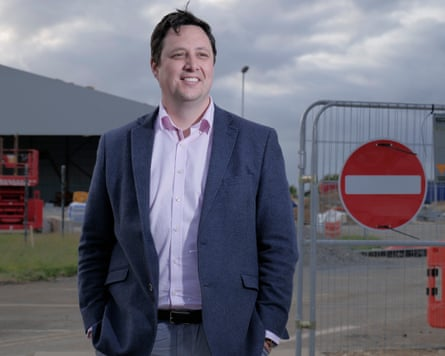
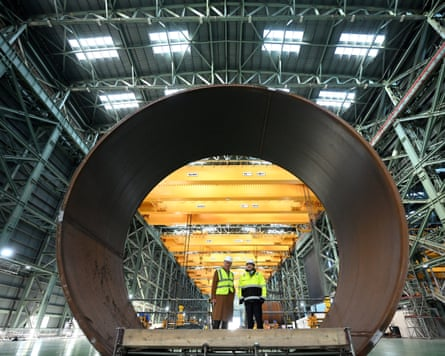
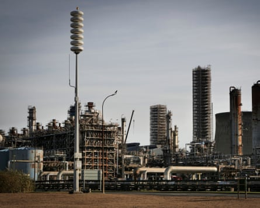
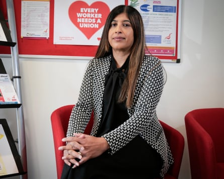
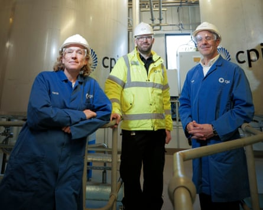

“W e’re basically going through a deindustrialisation of the country at the moment and I think we’re losing a lot of jobs,” says John Mac, over a pot of tea in a bustling Caffè Nero in the centre of Stockton-on-Tees.
The local candidate for Reform UK worked for years at the Billingham plant of Imperial Chemical Industries’s (ICI), before taking voluntary redundancy in the 1990s.
Having witnessed decades of industrial decline on Teesside first-hand, including the dismantling of the once-mighty industrial behemoth, Nigel Farage’s pivot to court the working class is speaking Mac’s language.
The Reform leader is targeting voters in post-industrial communities across Britain, outlined in a Guardian series showing how Farage views the “next Brexit” as reversing net zero to create a manufacturing renaissance.
This, the third in the series, looks at the future of another of Britain’s industrial heartlands.
Higher unemployment and poverty
If the latest opinion polls are anything to go by, four of the Tees Valley’s constituencies would go to Reform if an election was held tomorrow – including for Mac in Stockton North. Labour – which now controls six of the seats – is at pains not to allow a repeat of 2019, when its so-called red wall heartlands fell to the Tories, with many places – including on Teesside – turning blue for the first time.
Wednesday is market day in the town on the north bank of the Tees and Mac would usually be handing out leaflets to passersby. Many people are frustrated with the cost of living, lack of opportunities for young people, and immigration, he says.
Reform UK candidate John Mac says Brexit turned him to the party.Photograph: Mark Pinder/The Guardian
“They just think Labour don’t represent the working class any more,” Mac says.
His uncle, Maurice Foley, was a trade unionist and Labour MP in the 1960s who left parliament in 1973 to become the deputy director general for development at the European Commission. Ironically, Mac says it was Brexit that turned him to Reform.
Stockton and the wider Teesside area has higher than national average rates of unemployment, poverty and low educational attainment – trailing the rest of Britain in no small part as the legacy of a de-industrial revolution.
Once described by William Gladstone as an “infant Hercules”, a hotbed of steel making, shipbuilding and chemicals, Teesside has suffered waves of job losses in the past half century amid Britain’s broader industrial decline.
“It was central to British industrial capitalism, as a relatively prosperous booming place. The fall from grace has been huge,” says Luke Telford, an academic at York university and author on Brexit and industrial decline.
“Deindustrialisation acts as the economic backdrop to a lot of the problems, combined with the lack of an alternative. It has been an unjust transition, without really a plan in place.
“It gives rise to this sense that nobody listens to us, nobody really cares, we’re just left to languish. And politicians aren’t doing anything about it. Clearly Farage and his political strategists are learning the lessons from where that form of populism has gathered pace.”
Rise and fall
In the 1970s, Teesside was the third biggest contributor to the British economy behind London and Aberdeen. ICI employed more than 30,000 workers at its peak across two sites on either side of the Tees, at Billingham and Wilton; there were thousands more welders, electricians and other trades in the local supply chain, pumping money around the local economy.
However, the oil crises, galloping inflation and soaring interest rates of the 1970s, followed by Margaret Thatcher’s drive to reshape the UK to focus on services, while crushing the trade unions, hit the local area hard. Unemployment on Teesside exploded to more than a quarter, with a peak of up to 40% in central Middlesbrough.
Almost 40 years ago, Thatcher took a now famous “walk in the wilderness” through the barren landscape of the former Head Wrightson steelworks to highlight how her government would regenerate British industry. Jobs were created, but the Teesside Development Corporation she established to regenerate the area was wound up amid controversy in the late 1990s with vast unpayable debts.
The latest wave of deindustrialisation came with the closure of the Redcar steelworks.Photograph: Ian Forsyth/Getty Images
The latest wave of deindustrialisation – amid pressure from global competition and all too-familiar lack of government support – came in 2015 with the closure of Redcar’s steelworks a little further down the river, ending 170 years of steelmaking on Teesside. Telford grew up on Teesside and still lives locally. His uncle was among the 2,000 steelworkers who lost their jobs. He drives through Middlesbrough on Friday nights to play football with his brother, and says passing the demolished works and empty buildings has parallels with the US rust belt.
“One of them is a call centre which is shut. The tallest building in Middlesbrough, standing empty. It symbolises the area’s decline. Call centres were regarded as this new globalised service industry that was going to replace the relatively well-paid industrial jobs. But obviously that’s not how it turned out.”
‘It’s not all doom and gloom’
But the story of Teesside’s economic troubles is not uniform.
“We need to talk about the upside,” says Tania Cooper, the managing director of Steel Benders, a metal-bashing firm operating on the banks of the Tees in the shadow of Middlesbrough football club’s Riverside stadium.
The business owner sees burgeoning opportunities for economic growth, if regional leaders and central government get things right. While Teesside has some of the most deprived neighbourhoods in the country, there are also dozens of affluent villages and market towns also dotted about the picturesque spot underneath the Cleveland hills.
“It’s not all doom and gloom. It’s not grim up north, I wouldn’t want to live anywhere else,” Cooper says.
Although the Conservatives were booted out of parliamentary seats here in 2019, having been seen to have reneged on their promises of levelling up, many locals are still supportive of the Tees Valley’s Tory mayor, Ben Houchen.
The mayor’s assessment of his own party’s failings is frank. “What’s happening with Reform at the minute is like Brexit 2.0.
Tees Valley mayor Ben Houchen says people in Teesside feel ‘disenfranchised’.Photograph: Mark Pinder/The Guardian
“People feel like the system isn’t working for them. The Conservatives let them down, despite them putting their faith in them. Labour have been a huge disappointment, and so people are looking at voting for Reform in the same way that lots of people around here voted leave: because they feel disenfranchised.”
Houchen says his continuing presence as the only Conservative mayor in Britain, among a sea of Labour regional leaders, is down to his activism, including securing a freeport from the last government, funding local regeneration projects and taking stakes in assets such as Teesside International Airport.
However, his leadership has not been without controversy. Deals done at the Teesworks regeneration site and freeport have involved local business people who donated to the mayor. While an independent review found no evidence to support allegations of corruption or illegality, it warned the project was excessively secretive and could not ensure public money was being well spent.
Still, many local business leaders point to the project as a galvanising force for attracting investment; alongside central government prioritising the development of green jobs in the area.
“People definitely connect with that past narrative about the area. They feel it, they’re proud of it, and they want it to continue. If that means net zero Teesworks and green energy: so be it, great,” says Kiran Fothergill, a former Tory candidate in Middlesbrough, and the sixth-generation director of Pickerings Lifts, one of Teesside’s oldest manufacturers, based in Stockton.
King Charles and the SeAH Steel president, Joosung Lee, at its factory in Middlesbrough, which makes monopiles for wind turbines.Photograph: Oli Scarff/Reuters
There are hopes that offshore wind will be big business, including the construction of a £900m monopile manufacturing facility by South Korea’s SeAH Wind that will be the world’s largest. The government is investing heavily in a £4bn carbon capture and storage project alongside BP and Equinor, aiming to create 2,000 jobs.
That many of the opportunities rely on a net zero transition ought to make campaigning tough for Reform, given Farage’s pledge to cancel the central plank of government policy.
“I know people are saying they’re being replaced by jobs in the green industry, solar and the windfarms, but for every job there, we’re losing more, probably in the typical industrial sectors,” Mac says.
His opponent, Chris McDonald, the Labour MP for Stockton North, like Mac, is a former engineer.
Labour is making good progress on bringing investment to Teesside, he says, while Reform’s anti-net zero agenda would stop things dead.
“They’ll take all that investment away, people know that. Reform saying they will scrap all these things is such a disaster. It will put investors off,” he says.
Despite Farage’s attempts to position himself as a tribune of the working class, McDonald says Reform’s priorities are anywhere but – highlighted by the party’s opposition to Labour’s workers’ rights bill, which will strengthen access to maternity pay, sick pay, and banning exploitative zero-hours contracts.
“People in my area – a working-class area, with working people – they know how important those protections are and they know Reform are against them,” he says.
Timely transition?
Several of Teesside’s heaviest carbon emitters and industrial businesses are in danger of closing down operations before the new green jobs arrive, amid sky-high energy and carbon costs.
Britain has among the highest industrial electricity costs in the world, while gas prices have more than doubled since 2021.
There are fears of job losses at Saudi chemical firm Sabic’s plant at Wilton.Photograph: Mark Pinder/The Guardian
There are fears hundreds of jobs could be lost at the Saudi chemical firm Sabic’s Olefins 6 plant – known as ‘the cracker” – at Wilton, after the company paused a multimillion-pound upgrade project, amid spiralling costs and concerns about high energy prices.
CF Industries, a US company that took on ICI’s Billingham fertiliser plant, closed its ammonia plant at the site two years ago with the loss of almost 40 jobs, blaming high energy costs.
Paul Peacock, a former production technician and Unite union rep at Sabic, says losing the jobs would be “another nail in the chemical coffin” for Teesside.
“The area would go into further decline, you then get the sort of politics of Reform coming in promising everything – and it’s easy to see why people would listen, when they have lost good, well-paid jobs.”
Fazia Hussein-Brown says Niget Farage ‘sends out slogans with no substance behind’.Photograph: Mark Pinder/The Guardian
Fazia Hussain-Brown, Unite’s regional officer who represents workers at CF Fertilisers and Sabic, says that while locals “want something different” and have been let down by some of Labour’s policies, Reform is not the answer. “Farage is a slogan man, he sends out slogans with no substance behind, because he’s never had to justify it.”
On the site of Wilton International, the miles of twisted metal pipes, chimneys and cooling towers on the south bank of the river, shows first-hand Britain’s chequered industrial past, present and future all in one spot.
As many as 25,000 people worked here half a century ago, on an 809-hectare (2,000-acre) site first opened by ICI in 1949 as the showpiece of industrial Britain, producing nylon, plastics and other human-made materials.
Sophie Walton (director of strategic partnerships), Alex Smith (director of biotechnology) and Graeme Cruickshank (chief technology and innovation officer) at the Centre for Process Innovation.Photograph: Mark Pinder/The Guardian
The research hub and office block of the old ICI plant is now home to the Centre for Process Innovation (CPI), a government-backed social enterprise that supports scientists and companies with testing facilities to take their lab-based ideas into full-scale industrial production.
Equipped with high-voltage power, bomb blast bays, steam pipes, and load-bearing beams and floors – first put in place by ICI in the 1970s before the decline and demise of the industrial giant – Wilton has plenty of infrastructure and land to help more industrial businesses grow.
Graeme Cruickshank, CPI’s chief technology officer, hopes the government’s recently announced industrial strategy will provide more long-term strategic investment to support growing manufacturers in the low-carbon economy. Creating the jobs Teesside needs could depend on it.
“We always made stuff that was dirty, hard and heavy. It’s not unrealistic for us to do it again.”